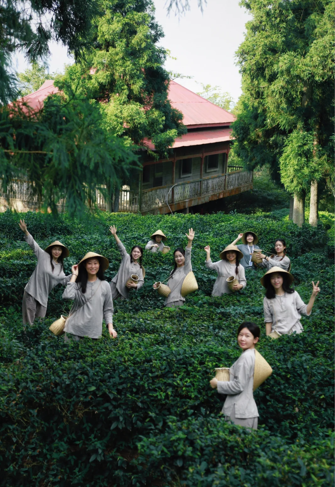
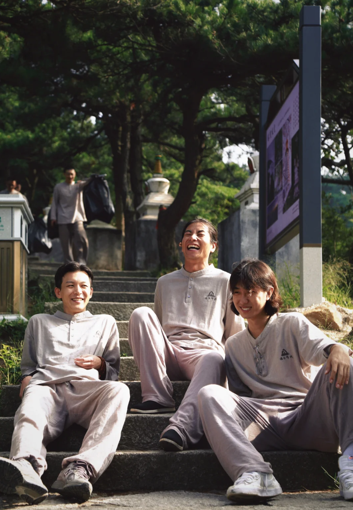
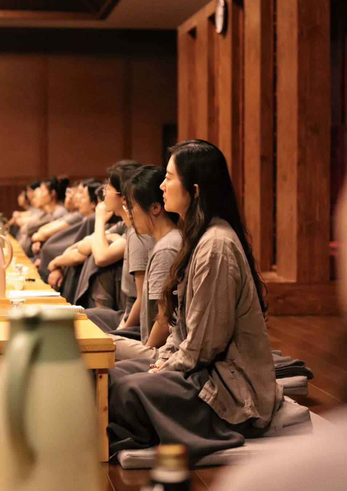
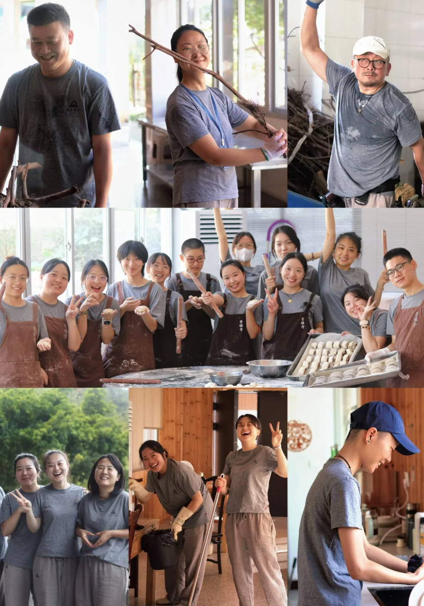

古寺公益
流芳百世仁者心,行止端正善行行




流芳百世仁者心,行止端正善行行
满眼生机转化钧，天工人巧日争新
数字藏经阁主要指敦煌研究院与腾讯联合打造的“数字藏经洞”项目，它是全球首个超时空参与式博物馆，通过游戏引擎、高清扫描和云技术1:1复原敦煌藏经洞场景。
金阁寺灵感键盘，这款键盘融合了古典建筑美学与现代设计精髓，键盘的每一个细节都充满了庭园的精致感。想象一下，一座金碧辉煌的寺庙变成了你的键盘！这款键盘采用了金阁寺的经典元素——金色的外观，映射出古老寺庙的辉煌。每个按键都闪烁着优雅的光芒，让你的办公桌瞬间提升档次。精细的图案雕刻，仿佛是庭园中的一石一木，带你感受静谧的东方美学。虽然外观古典，但键盘在功能上完全现代化。快速而准确的按键反应，确保了无论工作还是娱乐都能有出色的表现。这款键盘不仅是工作的好帮手，更是一件艺术品。每一次敲击，都是对美的赞颂！